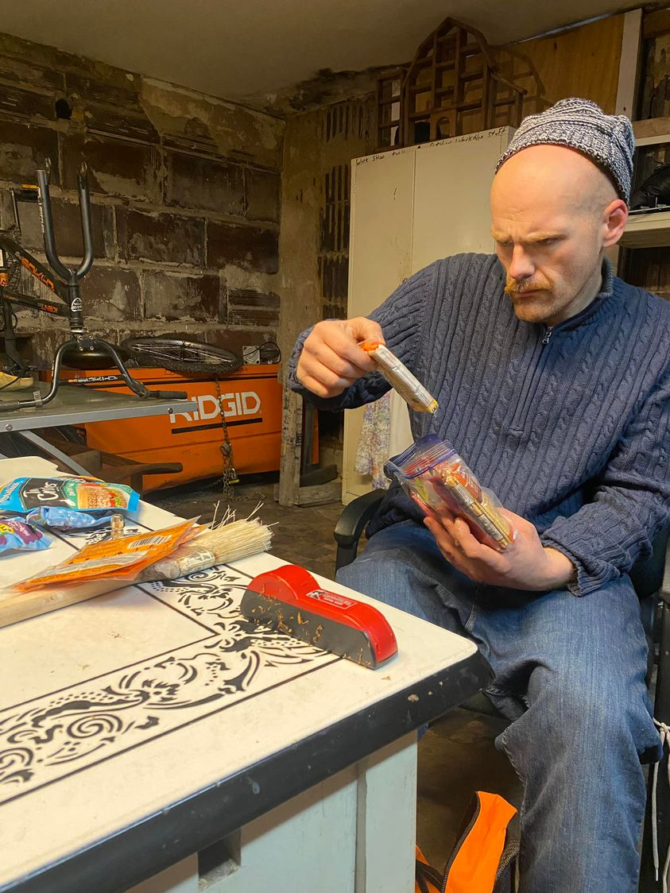

Mobile uploads
This is Brock.
He suffers from an extreme opiate addiction. And I mean SUFFERS.
He constantly talks about wanting to quit. And he often tries to quit. But he falls back to the drugs that relieve the pain and anguish of quitting a drug like fentanyl.
They say the withdrawal effects of quitting fentanyl are like having a bad flu times 10 for WEEKS.
I often say that the two biggest catalysts for change are jail and Jesus. They seem to be the biggest inspirations for quitting. It’s not AA. AA is just a tool that helps some people stay quit.
Jail is handy because it’s forced detox. And once you go through that then there is a lot of incentive to just stay quit.
But the real motivation for quitting is Time. The time has to be right for the individual to quit. Most people that go to jail or “find Jesus” don’t quit their addiction. They just aren’t ready yet. It might be 1 out of 10 that try to stay quit for more than a year after jail.
Brock is seen here going through a Ziplock bag of donations. He only wanted to take the things he’d use. The things he didn’t need he put back for someone else.